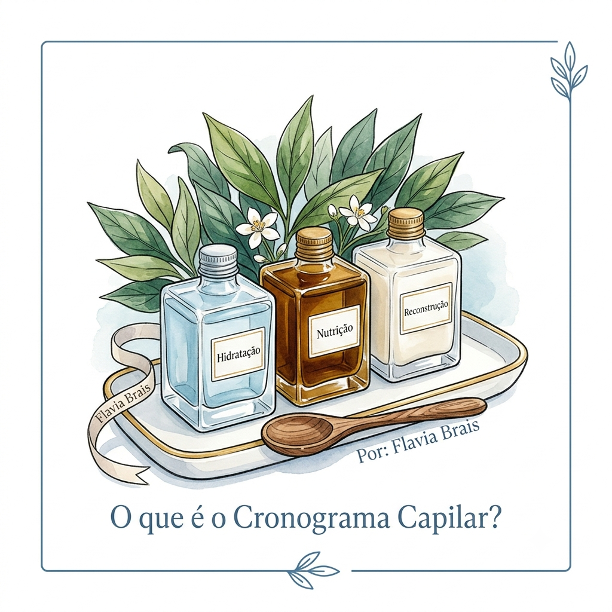

O que é o Cronograma Capilar?
Por: Flavia Brais
O cronograma capilar é uma rotina de cuidados dividida em três etapas: Hidratação, Nutrição e Reconstrução. Cada uma repõe nutrientes específicos para devolver vida, brilho e maciez aos fios.
Fonte: Revista Cabelos & Cia